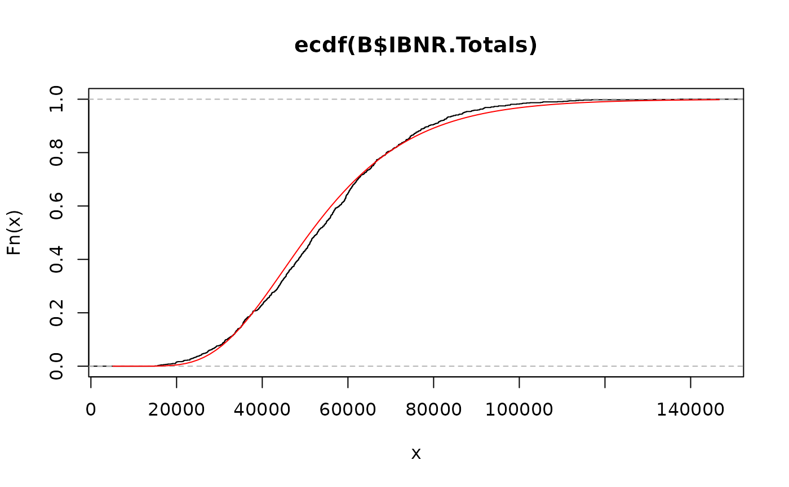
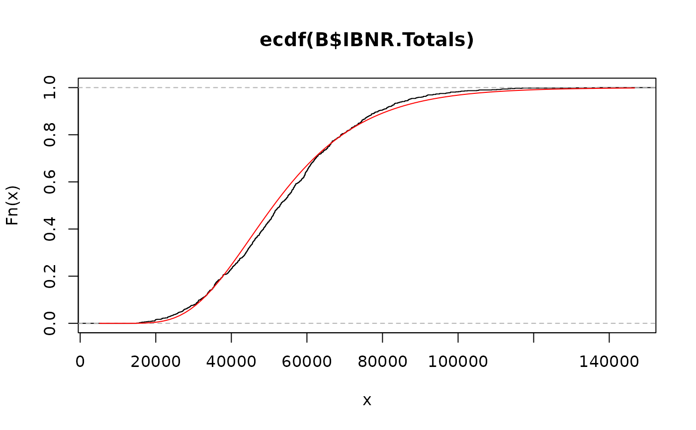

Bootstrap-Chain-Ladder Model
BootChainLadder.RdThe BootChainLadder procedure provides a predictive
distribution of reserves or IBNRs for a cumulative claims development triangle.
Usage
BootChainLadder(Triangle, R = 999, process.distr=c("gamma", "od.pois"), seed = NULL)Arguments
- Triangle
cumulative claims triangle. Assume columns are the development period, use transpose otherwise. A (mxn)-matrix \(C_{ik}\) which is filled for \(k \le n+1-i; i=1,\ldots,m; m\ge n \). See
qpaidfor how to use (mxn)-development triangles with m<n, say higher development period frequency (e.g quarterly) than origin period frequency (e.g accident years).- R
the number of bootstrap replicates.
- process.distr
character string indicating which process distribution to be assumed. One of "gamma" (default), or "od.pois" (over-dispersed Poisson), can be abbreviated
- seed
optional seed for the random generator
Details
The BootChainLadder function uses a two-stage
bootstrapping/simulation approach. In the first stage an ordinary
chain-ladder methods is applied to the cumulative claims triangle.
From this we calculate the scaled Pearson residuals which we bootstrap
R times to forecast future incremental claims payments via the
standard chain-ladder method.
In the second stage we simulate the process error with the bootstrap
value as the mean and using the process distribution assumed.
The set of reserves obtained in this way forms the predictive distribution,
from which summary statistics such as mean, prediction error or
quantiles can be derived.
Value
BootChainLadder gives a list with the following elements back:
- call
matched call
- Triangle
input triangle
- f
chain-ladder factors
- simClaims
array of dimension
c(m,n,R)with the simulated claims- IBNR.ByOrigin
array of dimension
c(m,1,R)with the modeled IBNRs by origin period- IBNR.Triangles
array of dimension
c(m,n,R)with the modeled IBNR development triangles- IBNR.Totals
vector of R samples of the total IBNRs
- ChainLadder.Residuals
adjusted Pearson chain-ladder residuals
- process.distr
assumed process distribution
- R
the number of bootstrap replicates
References
England, PD and Verrall, RJ. Stochastic Claims Reserving in General Insurance (with discussion), British Actuarial Journal 8, III. 2002
Barnett and Zehnwirth. The need for diagnostic assessment of bootstrap predictive models, Insureware technical report. 2007
Author
Markus Gesmann, markus.gesmann@gmail.com
Note
The implementation of BootChainLadder follows closely the
discussion of the bootstrap model in section 8 and appendix 3 of the
paper by England and Verrall (2002).
See also
See also
summary.BootChainLadder,
plot.BootChainLadder displaying results and finally
CDR.BootChainLadder for the one year claims development result.
Examples
# See also the example in section 8 of England & Verrall (2002) on page 55.
B <- BootChainLadder(RAA, R=999, process.distr="gamma")
B
#> BootChainLadder(Triangle = RAA, R = 999, process.distr = "gamma")
#>
#> Latest Mean Ultimate Mean IBNR IBNR.S.E IBNR 75% IBNR 95%
#> 1981 18,834 18,834 0 0 0 0
#> 1982 16,704 16,901 197 754 205 1,704
#> 1983 23,466 24,069 603 1,318 1,117 2,967
#> 1984 27,067 28,784 1,717 2,003 2,701 5,409
#> 1985 26,180 28,994 2,814 2,291 4,168 7,335
#> 1986 15,852 19,578 3,726 2,662 4,939 8,978
#> 1987 12,314 17,999 5,685 3,238 7,558 11,419
#> 1988 13,112 24,090 10,978 4,784 13,669 19,808
#> 1989 5,395 16,654 11,259 6,258 14,787 21,771
#> 1990 2,063 19,843 17,780 14,121 26,102 43,630
#>
#> Totals
#> Latest: 160,987
#> Mean Ultimate: 215,746
#> Mean IBNR: 54,759
#> IBNR.S.E 19,331
#> Total IBNR 75%: 67,005
#> Total IBNR 95%: 89,326
plot(B)
 # Compare to MackChainLadder
MackChainLadder(RAA)
#> MackChainLadder(Triangle = RAA)
#>
#> Latest Dev.To.Date Ultimate IBNR Mack.S.E CV(IBNR)
#> 1981 18,834 1.000 18,834 0 0 NaN
#> 1982 16,704 0.991 16,858 154 143 0.928
#> 1983 23,466 0.974 24,083 617 592 0.959
#> 1984 27,067 0.943 28,703 1,636 713 0.436
#> 1985 26,180 0.905 28,927 2,747 1,452 0.529
#> 1986 15,852 0.813 19,501 3,649 1,995 0.547
#> 1987 12,314 0.694 17,749 5,435 2,204 0.405
#> 1988 13,112 0.546 24,019 10,907 5,354 0.491
#> 1989 5,395 0.336 16,045 10,650 6,332 0.595
#> 1990 2,063 0.112 18,402 16,339 24,566 1.503
#>
#> Totals
#> Latest: 160,987.00
#> Dev: 0.76
#> Ultimate: 213,122.23
#> IBNR: 52,135.23
#> Mack.S.E 26,880.74
#> CV(IBNR): 0.52
quantile(B, c(0.75,0.95,0.99, 0.995))
#> $ByOrigin
#> IBNR 75% IBNR 95% IBNR 99% IBNR 99.5%
#> 1981 0.0000 0.000 0.000 0.000
#> 1982 204.8343 1704.318 3264.173 3545.788
#> 1983 1117.3461 2967.404 4335.517 6419.470
#> 1984 2701.4295 5408.688 7827.270 9352.420
#> 1985 4168.2175 7335.162 9190.110 9718.345
#> 1986 4938.6054 8977.874 12120.942 13083.709
#> 1987 7558.0823 11418.966 15198.655 16073.881
#> 1988 13668.6428 19808.057 24259.856 25632.204
#> 1989 14786.8103 21770.959 29016.277 35537.137
#> 1990 26101.8774 43629.720 60394.522 73357.678
#>
#> $Totals
#> Totals
#> IBNR 75%: 67005.02
#> IBNR 95%: 89325.58
#> IBNR 99%: 107808.51
#> IBNR 99.5%: 113249.54
#>
# fit a distribution to the IBNR
library(MASS)
plot(ecdf(B$IBNR.Totals))
# fit a log-normal distribution
fit <- fitdistr(B$IBNR.Totals[B$IBNR.Totals>0], "lognormal")
fit
#> meanlog sdlog
#> 10.843238941 0.382203762
#> ( 0.012092392) ( 0.008550612)
curve(plnorm(x,fit$estimate["meanlog"], fit$estimate["sdlog"]), col="red", add=TRUE)

# See also the ABC example in Barnett and Zehnwirth (2007)
A <- BootChainLadder(ABC, R=999, process.distr="gamma")
A
#> BootChainLadder(Triangle = ABC, R = 999, process.distr = "gamma")
#>
#> Latest Mean Ultimate Mean IBNR IBNR.S.E IBNR 75% IBNR 95%
#> 1977 762,544 762,544 0 0 0 0
#> 1978 889,022 903,227 14,205 5,063 17,121 23,315
#> 1979 1,019,932 1,057,477 37,545 8,010 42,965 50,973
#> 1980 1,002,134 1,065,965 63,831 10,006 70,031 81,499
#> 1981 1,002,194 1,102,372 100,178 11,981 107,913 121,552
#> 1982 944,614 1,088,186 143,572 14,124 151,847 168,341
#> 1983 895,700 1,107,736 212,036 17,388 223,981 241,344
#> 1984 1,024,228 1,409,915 385,687 24,505 401,663 427,891
#> 1985 1,173,448 1,939,647 766,199 37,393 791,795 827,385
#> 1986 1,011,178 2,373,554 1,362,376 59,381 1,399,825 1,466,886
#> 1987 496,200 2,690,968 2,194,768 112,580 2,256,277 2,399,332
#>
#> Totals
#> Latest: 10,221,194
#> Mean Ultimate: 15,501,592
#> Mean IBNR: 5,280,398
#> IBNR.S.E 177,892
#> Total IBNR 75%: 5,389,474
#> Total IBNR 95%: 5,586,331
plot(A, log=TRUE)
# Compare to MackChainLadder
MackChainLadder(RAA)
#> MackChainLadder(Triangle = RAA)
#>
#> Latest Dev.To.Date Ultimate IBNR Mack.S.E CV(IBNR)
#> 1981 18,834 1.000 18,834 0 0 NaN
#> 1982 16,704 0.991 16,858 154 143 0.928
#> 1983 23,466 0.974 24,083 617 592 0.959
#> 1984 27,067 0.943 28,703 1,636 713 0.436
#> 1985 26,180 0.905 28,927 2,747 1,452 0.529
#> 1986 15,852 0.813 19,501 3,649 1,995 0.547
#> 1987 12,314 0.694 17,749 5,435 2,204 0.405
#> 1988 13,112 0.546 24,019 10,907 5,354 0.491
#> 1989 5,395 0.336 16,045 10,650 6,332 0.595
#> 1990 2,063 0.112 18,402 16,339 24,566 1.503
#>
#> Totals
#> Latest: 160,987.00
#> Dev: 0.76
#> Ultimate: 213,122.23
#> IBNR: 52,135.23
#> Mack.S.E 26,880.74
#> CV(IBNR): 0.52
quantile(B, c(0.75,0.95,0.99, 0.995))
#> $ByOrigin
#> IBNR 75% IBNR 95% IBNR 99% IBNR 99.5%
#> 1981 0.0000 0.000 0.000 0.000
#> 1982 204.8343 1704.318 3264.173 3545.788
#> 1983 1117.3461 2967.404 4335.517 6419.470
#> 1984 2701.4295 5408.688 7827.270 9352.420
#> 1985 4168.2175 7335.162 9190.110 9718.345
#> 1986 4938.6054 8977.874 12120.942 13083.709
#> 1987 7558.0823 11418.966 15198.655 16073.881
#> 1988 13668.6428 19808.057 24259.856 25632.204
#> 1989 14786.8103 21770.959 29016.277 35537.137
#> 1990 26101.8774 43629.720 60394.522 73357.678
#>
#> $Totals
#> Totals
#> IBNR 75%: 67005.02
#> IBNR 95%: 89325.58
#> IBNR 99%: 107808.51
#> IBNR 99.5%: 113249.54
#>
# fit a distribution to the IBNR
library(MASS)
plot(ecdf(B$IBNR.Totals))
# fit a log-normal distribution
fit <- fitdistr(B$IBNR.Totals[B$IBNR.Totals>0], "lognormal")
fit
#> meanlog sdlog
#> 10.843238941 0.382203762
#> ( 0.012092392) ( 0.008550612)
curve(plnorm(x,fit$estimate["meanlog"], fit$estimate["sdlog"]), col="red", add=TRUE)

# See also the ABC example in Barnett and Zehnwirth (2007)
A <- BootChainLadder(ABC, R=999, process.distr="gamma")
A
#> BootChainLadder(Triangle = ABC, R = 999, process.distr = "gamma")
#>
#> Latest Mean Ultimate Mean IBNR IBNR.S.E IBNR 75% IBNR 95%
#> 1977 762,544 762,544 0 0 0 0
#> 1978 889,022 903,227 14,205 5,063 17,121 23,315
#> 1979 1,019,932 1,057,477 37,545 8,010 42,965 50,973
#> 1980 1,002,134 1,065,965 63,831 10,006 70,031 81,499
#> 1981 1,002,194 1,102,372 100,178 11,981 107,913 121,552
#> 1982 944,614 1,088,186 143,572 14,124 151,847 168,341
#> 1983 895,700 1,107,736 212,036 17,388 223,981 241,344
#> 1984 1,024,228 1,409,915 385,687 24,505 401,663 427,891
#> 1985 1,173,448 1,939,647 766,199 37,393 791,795 827,385
#> 1986 1,011,178 2,373,554 1,362,376 59,381 1,399,825 1,466,886
#> 1987 496,200 2,690,968 2,194,768 112,580 2,256,277 2,399,332
#>
#> Totals
#> Latest: 10,221,194
#> Mean Ultimate: 15,501,592
#> Mean IBNR: 5,280,398
#> IBNR.S.E 177,892
#> Total IBNR 75%: 5,389,474
#> Total IBNR 95%: 5,586,331
plot(A, log=TRUE)
 ## One year claims development result
CDR(A)
#> IBNR IBNR.S.E CDR(1)S.E CDR(1)75% CDR(1)95%
#> 1977 0.00 0.000 0.000 0.00 0.00
#> 1978 14204.79 5063.042 5063.042 17121.36 23314.51
#> 1979 37544.74 8010.141 6431.272 41495.87 48099.49
#> 1980 63831.27 10006.315 6912.543 68386.76 76139.07
#> 1981 100178.18 11980.857 7946.112 105709.99 113774.09
#> 1982 143572.48 14123.774 8721.838 149155.01 158234.96
#> 1983 212036.09 17387.774 10722.941 218889.66 230011.95
#> 1984 385686.94 24504.632 14942.826 395618.21 410498.29
#> 1985 766199.41 37392.545 25049.638 782342.36 807578.39
#> 1986 1362376.44 59380.677 42857.667 1389065.88 1431208.22
#> 1987 2194768.01 112579.822 92595.410 2245995.99 2351231.43
#> Total 5280398.35 177891.617 131914.734 5359121.03 5490246.70
## One year claims development result
CDR(A)
#> IBNR IBNR.S.E CDR(1)S.E CDR(1)75% CDR(1)95%
#> 1977 0.00 0.000 0.000 0.00 0.00
#> 1978 14204.79 5063.042 5063.042 17121.36 23314.51
#> 1979 37544.74 8010.141 6431.272 41495.87 48099.49
#> 1980 63831.27 10006.315 6912.543 68386.76 76139.07
#> 1981 100178.18 11980.857 7946.112 105709.99 113774.09
#> 1982 143572.48 14123.774 8721.838 149155.01 158234.96
#> 1983 212036.09 17387.774 10722.941 218889.66 230011.95
#> 1984 385686.94 24504.632 14942.826 395618.21 410498.29
#> 1985 766199.41 37392.545 25049.638 782342.36 807578.39
#> 1986 1362376.44 59380.677 42857.667 1389065.88 1431208.22
#> 1987 2194768.01 112579.822 92595.410 2245995.99 2351231.43
#> Total 5280398.35 177891.617 131914.734 5359121.03 5490246.70